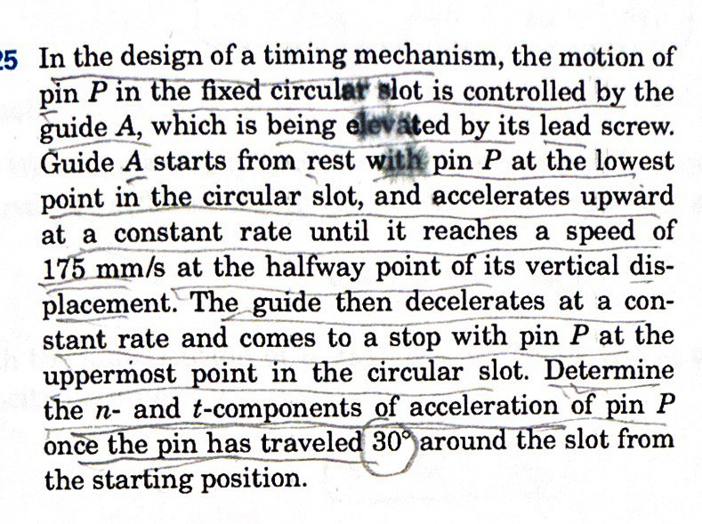
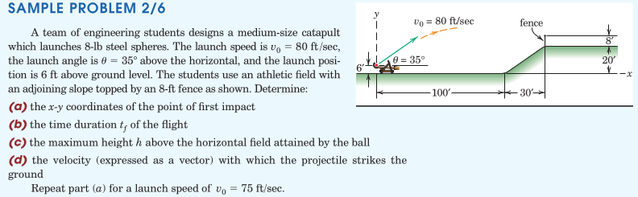
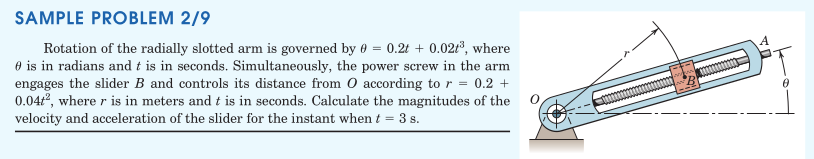

curvilinear motion
Particle Kinematics
2025-10-01
1. Plane Curvilinear Motion
- motion within a plane
- the path trajectory
- the path variable, \(s\)
1.1. Description without Coordinates
- change in placement, \(\Delta\boldsymbol{r}\)
- velocity, \(\boldsymbol{v}=\dot{\boldsymbol{r}}\)
- velocity magnitude, \(v=\dot{s}\)
1.2. Acceleration
- change in velocity, \(\Delta\boldsymbol{v}\)
- acceleration, \(\boldsymbol{a}=\dot{\boldsymbol{v}}\)
2. \(n-t\) Natural Coordinates
- normal and tangent to the path
- natural unit vectors (\(\boldsymbol{e}_n\) and \(\boldsymbol{e}_t\))
- center of curvature, \(C\), and the radius of curvature, \(\rho\)
- rotation about \(C\)
- velocity is aligned with the tangent
2.1. Acceleration Components
- tangential acceleration, \(a_t = \ddot{s}\)
- normal acceleration
2.2. Examples




3. \(x-y\) Cartesian Coordinates
- motion is expressed in terms of unit vectors, \(\boldsymbol{i}\) and \(\boldsymbol{j}\)
- the unit vectors are fixed (they do not move during the motion), and their differentials are thus zero.
- \(\boldsymbol{r} = x \boldsymbol{i} + y \boldsymbol{j}\)
- \(\boldsymbol{v} = \dot{\boldsymbol{r}} = \dot{x} \boldsymbol{i} + \dot{y} \boldsymbol{j}\)
- \(\boldsymbol{a} = \ddot{\boldsymbol{r}} = \ddot{x} \boldsymbol{i} + \ddot{y} \boldsymbol{j}\)
3.1. Projectile Motion
- if the gravity direction coincides with one of the Cartesian axes (e.g. \(-y\) direction), then the acceleration components decompose
- \(a_x=0\) and \(a_y=-g\) (if all effects other than gravity can be excluded)
- Then the integration of the equations of motion from acceleration becomes possible
3.2. Examples

4. \(r-\theta\) Polar Coordinates
- motion is expressed in terms of unit vectors, \(\boldsymbol{e}_r\) and \(\boldsymbol{e}_\theta\)
- the unit vectors reorient themselves with location (they rotate during the motion)
- differentials of the unit vectors are not zero \[ d\boldsymbol{e}_r = d\theta\,\boldsymbol{e}_\theta \,\mathrm{and}\; d\boldsymbol{e}_\theta = -d\theta\,\boldsymbol{e}_r\]
- \(\boldsymbol{r} = r \boldsymbol{e}_r\)
- velocity and acceleration is found by differentiating \(\boldsymbol{r}\) with respect to time.
4.1. Circular Motion
- when the motion is circular, the radius \(r\) stays fixed and \(\dot{r}=0\)
- The kinematic equations are simplified accordingly.
4.2. Examples

5. Review
From the book: Section 2.4, 2.5, and 2.6, Problems
From Hibbeler, Engineering Mechanics: Dynamics: Chapter 12, F37, F38, 100, 113, 115, 121, 124, 128, 147, 153, 169, 175, 177, 179, 180, 182, 184, 186, 188, 192, 194